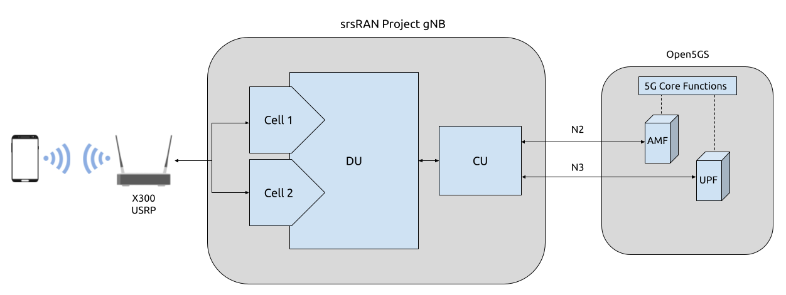
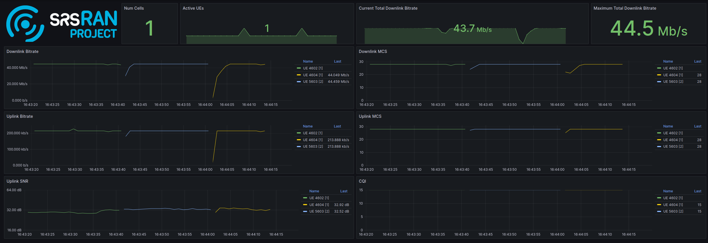

srsRAN gNB Handover
Note
srsRAN Project 24.04 or later is required for this use case.
Overview
srsRAN Project 24.04 brings handover capabilities to the code base. These features enable Intra-gNB handover, i.e. handover cells connected to the same CU-CP. This allows the UE to move between two cells, handover can be triggered manually via the command line or automatically by physically moving the UE.
In practice this is enabled by creating two cells within a DU within the srsRAN gNB binary. This requires using a USRP that has two independent RF chains. Each cell will be given an associated RF chain, which the UE then being able move between these.
The following diagram presents the setup architecture:

Hardware and Software Overview
For this application note, the following hardware and software are used:
PC with Ubuntu 22.04.1 LTS
srsRAN Project (24.04 or later)
Ettus Research X310 USRP (connected over 10 GigE)
Open5GS 5G Core (running in docker)
COTS UE (Fairphone 5)
srsRAN Project
If you have not already done so, install the latest version of srsRAN Project and all of its dependencies. This is outlined in the Installation Guide.
X310 USRP
Handover requires the USRP being used to have a dual channel RF-frontend with independent RF chains. As a result, this tutorial uses an X310 as the RF-frontend.
Not all dual channel USRPs have independent RF chains, this means that, for example, a B200-series USRP is not suitable for this use case.
Open5GS
For the purpose of this application note, we will use a dockerized Open5GS version provided in srsRAN Project at srsgnb/docker as the 5G Core.
Open5GS is a C-language Open Source implementation for 5G Core and EPC. The following links will provide you with the information needed to download and set-up Open5GS so that it is ready to use with srsRAN:
COTS UE
A 5G SA capable COTS UE is used for this tutorial, specifically the Fairphone 5. A detailed list of COTS UEs that have been tested with srsRAN Project can be found here.
For more information on connecting a COTS UEs to srsRAN Project, see the full tutorial.
Configuration
To configure srsRAN Project to enable handover between cells, the following steps must be taken:
Add the two cells to the
cellslistUpdate the
cu_cpmobilityoptions
A sample configuration file can be downloaded here: handover_x310.yml
A detailed breakdown of the changes to the configuration is as follows.
A cells list is created containing two cells. Each is given a different Physical Cell ID, and PRACH root sequence index.
cells:
-
# Cell 1
pci: 1 # Set the Physcial Cell ID
prach:
prach_root_sequence_index: 0 # Set the PRACH root sequence index
-
# Cell 2
pci: 2 # Set the Physcial Cell ID
prach:
prach_root_sequence_index: 64 # Set the PRACH root sequence index
The cells and mobility information must also be added to the cu_cp, under the mobility options. Firstly the cells list needs to be updated with each of the cells, the report_configs must also be updated
with the necessary information for each of the cells and the conditions for triggering handover. As usual, the amf is also configured within the cu_cp.
cu_cp:
amf:
addr: 10.12.1.105 # The address or hostname of the AMF.
bind_addr: 10.12.1.148 # A local IP that the gNB binds to for traffic from the AMF.
supported_tracking_areas: # Configure the TA associated with the CU-CP
- tac: 7 # Tracking area code
plmn_list: # List of PLMNs associated with the tracking area
- plmn: "00101" # PLMN ID
tai_slice_support_list: # List of slices supported by the tracking area
- sst: 1 # Slice/Service Type
mobility:
trigger_handover_from_measurements: true # Set the CU-CP to trigger handover when neighbor cell measurements arrive
cells: # List of cells available for handover known to the cu-cp
- nr_cell_id: 0x19B0 # Cell ID for cell 1
periodic_report_cfg_id: 1 # Set the periodic report configuration ID for this cell
ncells: # Neighbor cell(s) available for handover
- nr_cell_id: 0x19B1 # Cell ID of neighbor cell available for handover
report_configs: [ 2 ] # Report configurations to configure for this neighbor cell
- nr_cell_id: 0x19B1 # Cell ID for cell 2
periodic_report_cfg_id: 1 # Set the periodic report configuration ID for this cell
ncells: # Neighbor cell(s) available for handover
- nr_cell_id: 0x19B0 # Cell ID of neighbor cell available for handover
report_configs: [ 2 ] # Report configurations to configure for this neighbor cell
report_configs: # Sets the report configuration for triggering handover
- report_cfg_id: 1 # Report config ID 1
report_type: periodical # Sets the report type as periodical
report_interval_ms: 480 # Sets to report every 480ms
- report_cfg_id: 2 # Report config ID 2
report_type: event_triggered # Sets the report type as event triggered
event_triggered_report_type: a3 # Sets the event triggered report type as A3
meas_trigger_quantity: rsrp # Sets the measurement trigger quantity as rsrp
meas_trigger_quantity_offset_db: 3 # Sets the measurement trigger quantity offset to 3dB
hysteresis_db: 0 # Sets the hysteresis to 0dB
time_to_trigger_ms: 100 # Sets the time to trigger to 100ms
A3 events are defined as events when intra-frequency handover should be triggered. In the above configuration the conditions under which such an event should be triggered are set as when the neighbor cell’s RSRP measurement is 1.5 dB better than serving cell. The hysteresis is set to 0, which means that handover is triggered when an offset exactly 1.5 dB is met. Once these conditions are met, the UE will handover between the cells. This is true for handover in each direction.
Connecting the COTS UE
Connecting the COTS UE to the network follows the same steps outline in this tutorial. For debugging tips related to this, see both the tutorial the GitHub Discussions.
Triggering Handover
Handover can be triggered in two ways:
Adjusting the Tx gain from the console while the gNB is running
Physically moving the UE from left to right away from the primary cell and towards the secondary cell.
From Console
The Tx gain of each cell can be manually controlled during run time from the console.
While the gNB is running, you can dynamically adjust the Tx gain using the following command:
tx_gain <port_id> <gain_dB>
Note
The Rx gain can also be set the same way, using rx_gain <port_id> <gain_dB>. To trigger handover it is only necessary to modify the Tx gain.
In this example, the gain of the cell with PCI 1 will be changed (this corresponds to the output of RF0 on the USRP), while the gain of the cell with PCI 2 will be fixed (this corresponds to the output of RF1 on the USRP). Decreasing the gain to 10 dB, will cause the UE to move to the PCI 2, increasing the gain back to 30 dB will cause the UE to move back to the cell with PCI 1.
The gain can be adjusted using the following command:
tx_gain 0 10
Handover will then be triggered, this can be seen in the console as the PCI of the serving cell changes:
|--------------------DL---------------------|-------------------------UL------------------------------
pci rnti | cqi ri mcs brate ok nok (%) dl_bs | pusch rsrp mcs brate ok nok (%) bsr ta phr
1 4601 | 15 1 28 2.4M 178 0 0% 0 | 27.4 -40.4 28 214k 50 0 0% 0 0us 28
1 4601 | 15 1 28 2.5M 180 0 0% 0 | 27.4 -40.6 28 214k 50 0 0% 0 0us 28
tx_gain 0 10
Tx gain set to 10.0 dB for port 0.
2 5601 | 15 1 26 1.2M 81 2 2% 0 | 31.2 -35.7 27 100k 24 0 0% 0 0us 27
2 5601 | 15 1 27 2.4M 175 0 0% 1.5k | 30.8 -37.2 28 214k 50 0 0% 0 0us 27
2 5601 | 15 1 28 2.4M 177 0 0% 0 | 30.0 -37.4 28 214k 50 0 0% 0 0us 27
2 5601 | 15 1 28 2.4M 178 0 0% 0 | 30.7 -37.4 28 214k 50 0 0% 0 0us 27
To get the UE to move back to the original cell the following command can be used:
tx_gain 0 30
With the following output confirming the handover back to the original cell:
|--------------------DL---------------------|-------------------------UL------------------------------
pci rnti | cqi ri mcs brate ok nok (%) dl_bs | pusch rsrp mcs brate ok nok (%) bsr ta phr
2 5601 | 15 1 28 2.5M 185 0 0% 0 | 29.6 -37.9 28 214k 50 0 0% 0 0us 27
2 5601 | 15 1 28 2.5M 179 0 0% 0 | 28.6 -39.1 28 215k 50 0 0% 0 0us 27
2 5601 | 15 1 28 2.4M 182 0 0% 0 | 30.4 -37.9 28 214k 50 0 0% 0 0us 27
2 5601 | 15 1 28 2.5M 185 0 0% 1.5k | 30.6 -37.4 28 214k 50 0 0% 0 0us 27
2 5601 | 15 1 28 2.5M 178 0 0% 0 | 30.3 -36.3 28 214k 50 0 0% 0 0us 27
tx_gain 0 30
Tx gain set to 30.0 dB for port 0.
|--------------------DL---------------------|-------------------------UL------------------------------
1 4602 | 15 1 26 217k 15 2 11% 0 | 10.9 -54.0 24 4.5k 2 3 60% 0 0us 38
1 4602 | 15 1 27 2.5M 174 0 0% 0 | 16.3 -50.0 23 208k 49 18 26% 0 0us 38
1 4602 | 15 1 27 2.4M 172 3 1% 0 | 15.0 -51.3 18 214k 50 0 0% 0 0us 38
1 4602 | 15 1 27 2.4M 173 0 0% 1.5k | 15.1 -51.3 19 214k 50 0 0% 0 0us 38
1 4602 | 15 1 28 2.5M 183 0 0% 3 | 14.5 -51.7 18 214k 50 0 0% 0 0us 38
This can then be repeated as desired to trigger handover between the cells when ever it is required based on the needs of your use case.
Physically
The following image shows the UE moving up and down along the Y-axis, this causes the UE to handover between cells as the signal strength of the serving cell decreases as the UE moves away from it. The inverse happens to the neighbor cell, the signal strength increase as the UE moves into its serving area. This triggers an A3 event and causes the UE to handover between cells once the conditions defined in the configuration file are met. In this case, once the RSRP of the neighbor cell has a 1.5 dB offset to the current serving cell.
Physically, this translates to moving the UE left-to-right between the antennas of the USRP, where PCI 1 corresponds to the cell associated with RF0 and PCI 2 corresponds to the cell associated with RF1.
As handover is triggered, it can be seen in the console as the PCI of the serving cell changing:
|--------------------DL---------------------|-------------------------UL------------------------------
pci rnti | cqi ri mcs brate ok nok (%) dl_bs | pusch rsrp mcs brate ok nok (%) bsr ta phr
1 4602 | 15 1 28 44M 1400 0 0% 6.14M | 32.5 -16.3 28 214k 50 0 0% 0 0us 25
1 4602 | 15 1 28 44M 1400 0 0% 6.14M | 31.9 -16.2 28 214k 50 0 0% 0 0us 25
1 4602 | 15 1 28 44M 1371 29 2% 6.14M | 31.8 -15.6 28 214k 50 0 0% 0 0us 18
2 5603 | 15 1 24 30M 1178 26 2% 6.15M | 33.0 -11.8 27 179k 43 0 0% 0 0us 23
2 5603 | 15 1 26 41M 1400 0 0% 6.14M | 33.1 -11.9 28 214k 50 0 0% 0 0us 23
2 5603 | 15 1 28 44M 1400 0 0% 6.14M | 32.6 -12.0 28 214k 50 0 0% 0 0us 23
Moving the UE back across to the area covered by Cell 1 (PCI 1), the following can be seen in the console output:
|--------------------DL---------------------|-------------------------UL------------------------------
pci rnti | cqi ri mcs brate ok nok (%) dl_bs | pusch rsrp mcs brate ok nok (%) bsr ta phr
2 5603 | 15 1 28 44M 1400 0 0% 6.14M | 32.8 -9.0 28 214k 50 0 0% 0 0us 20
2 5603 | 15 1 28 44M 1400 0 0% 6.14M | 33.3 -9.5 28 214k 50 0 0% 0 0us 20
2 5603 | 15 1 28 44M 1400 0 0% 6.14M | 32.5 -8.9 28 214k 50 0 0% 0 0us 19
1 4604 | 15 1 22 2.7M 128 41 24% 2.21M | 29.4 -7.9 25 18k 5 0 0% 0 0us 17
1 4604 | 15 1 21 29M 1400 0 0% 6.15M | 34.6 -14.6 28 215k 51 0 0% 0 0us 24
1 4604 | 15 1 24 36M 1400 0 0% 6.14M | 34.5 -14.5 28 214k 50 0 0% 0 0us 24
On some occasions, the UE may “ping-pong” between cells, if it sits in the area where the cell-coverage overlaps, this behavior is normal and can be rectified by moving the UE further into the area covered by either cell. This may also be mitigated by configuring a hysteresis value.
Grafana Output
Using the Grafana GUI the handover process, and it’s impact on certain metrics, can be clearly observed. The following image shows an example scenario where a UE is moving between two cells. In this scenario the UE is being physically moved between the cells to trigger handover.

In the above image the traffic is being generated between the UE and gNB using iPerf.
Limitations
Currently only intra-cell intra-frequency handover is supported.
Intra-gNB handover is only supported with an X or N-series USRP.